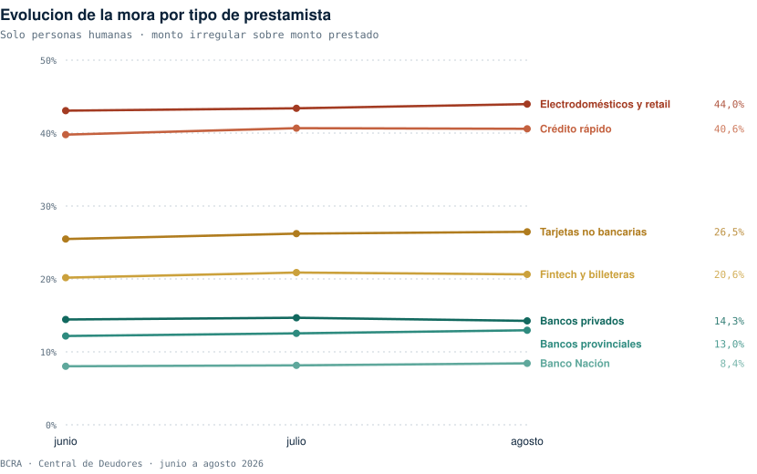
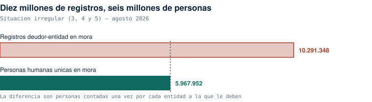
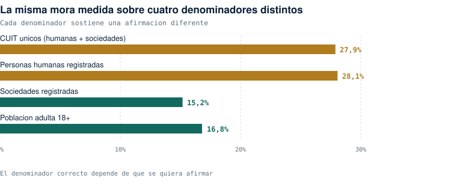
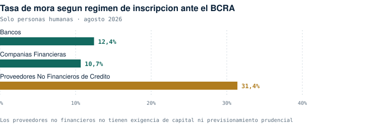
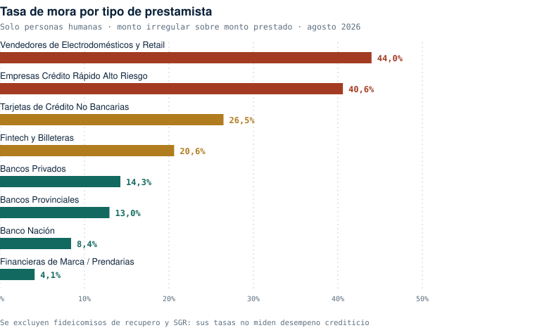
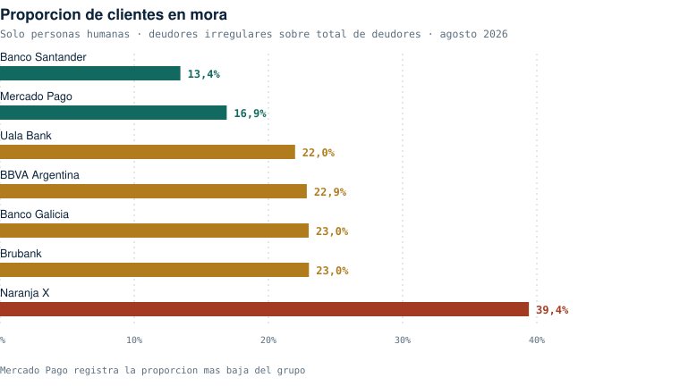
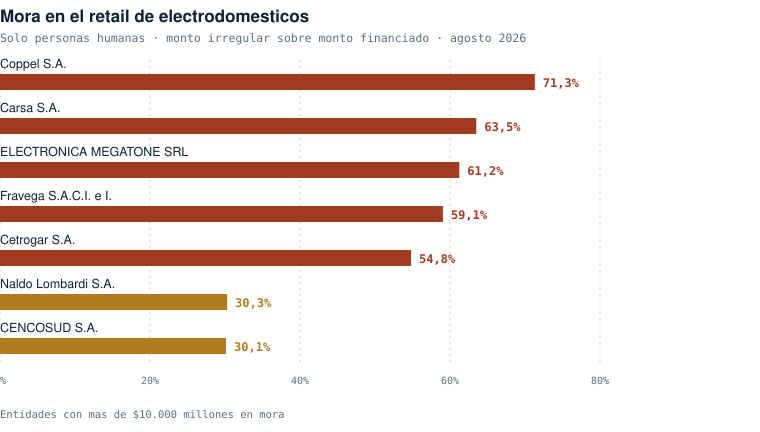

Gráficos — La mora argentina
Central de Deudores del BCRA, junio a agosto 2026. Generados por scripts/04_generar_graficos.py.

07 · Evolución de la mora por tipo de prestamista, junio a agosto

01 · Registros deudor-entidad contra personas humanas únicas

06 · La misma mora medida sobre cuatro denominadores

03 · Tasa de mora según régimen de inscripción

02 · Tasa de mora por tipo de prestamista

04 · Proporción de clientes en mora

05 · Mora en el retail de electrodomésticos